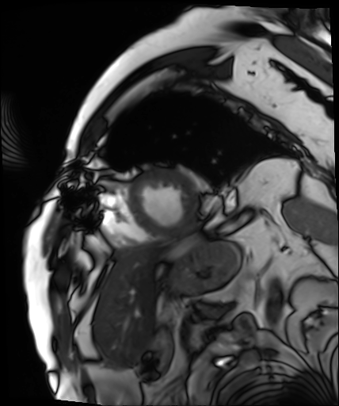
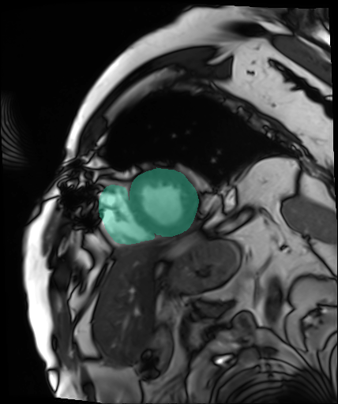

端到端研究流程 / 2.4.0
MRI 會診準備與可追溯交接
把影像、來源、分析事實與報告版本串在同一個案例，讓下一位接手者知道做過什麼、仍缺什麼。
使用內附 ACDC 預處理研究 MRI 與提供標籤，執行實際 Python 分析。覆核與 final 報告是示範確認；尚未建立臨床診斷，也未驗證醫事身分。
512 × 428 / 每張
類別 1＋2＋3，名稱未核實
草稿、初步、示範確認
此開發環境；不含人工覆核
這次要回答的問題
這 8 張 MRI 與提供標籤是否對齊？能否產生有來源依據的 3D 表面，並把分析事實、尚缺資料與報告版本一併交接？
- 模式
- 影像量測，不辨識病灶
- 分割來源
- 提供的研究標籤；非模型預測
- 中心切片
- 第 5 張 / 共 8 張
- 空間單位
- voxel；間距與方向未驗證
已驗證的流程行為
- 背景未確認 → 阻擋執行，未產生分析
- 補齊研究情境 → 另存規格，保留原任務
- 實際產生遮罩、表面與來源事實
- 示範確認 → 帶入六欄研究報告
- v3 確認後鎖定；覆寫請求回傳 409
- 匯出 FHIR，保存版本與事件雜湊鏈
正在讀取已保存的執行紀錄…
IMAGE EVIDENCE
原圖與標籤，同一張切片核對


來源標籤已用於重建，因此沒有獨立的分割預測可計算 Dice。未執行病灶辨識，不以「0 個候選」代表沒有疾病。
實際工具紀錄
| 階段 | 實際輸出／適用範圍 | 本次時間 |
|---|
時間為單次軟體執行紀錄；0 ms 是計時解析度內的結果。階段時間不含所有序列化、保存與檢核開銷，不能代替總流程時間。
SOURCE-BOUND SURFACE
由這次遮罩產生的三維表面
正在讀取保存的網格…
這是 8 張切片範圍內的研究標籤表面，並未還原完整心臟。平滑不改寫遮罩、量測或來源 OBJ／STL；採樣顯示比例不代表毫米校正。不得用於手術導航或判定適應症。
REPORT & HANDOFF
六欄研究報告與完整交接紀錄
確認種類：腳本研究展示確認
非醫師簽核、非醫院電子簽章；未寫回 HIS／PACS。
保留每一次變更
| 版本 | 狀態 | UTC |
|---|
交接時仍需補齊
資料清單仍未完成；報告的示範確認不表示已具備治療或手術決策條件。
下載實際執行證據
FHIR 為本地 collection Bundle，含 Patient、ServiceRequest、DiagnosticReport 三種資源；未測試院內伺服器接收。
AMD AI PC ACCEPTANCE
這個案例在 AMD AI PC 上要驗收什麼
目前這份紀錄使用 Linux / CPython 參考路徑；另已於公開工作站用瀏覽器 Python 完成操作。兩次執行各有自己的分析 ID，不能當作 AMD 硬體效能證明。
| 執行項目 | 本次結果 | AMD AI PC 接續驗收 |
|---|---|---|
| 影像、標籤、3D 與報告 | 已執行，保留來源及版本 | 安裝 Windows 套件，重跑同一來源並比對輸出 |
| Lemonade / 本機語言模型 | 未連線；本次使用規則事實整理 | 備妥模型後記錄實際模型、回應、失敗處理與時間 |
| ONNX / Ryzen AI 影像路徑 | 未載入訓練影像模型；未執行 NPU | 另備相容模型及獨立標註，保存 provider 與實際裝置紀錄 |
| Quark / Hybrid | 未啟用量化或 Hybrid 文字推論 | 比較精度版本、正確性、記憶體及資源競用 |
可重現指令隨證據包附上。模型權重、驅動、NPU 部署及臨床成效需要另外驗收。
3-MINUTE DEMONSTRATION
現場展示順序與講稿
| 時間 | 操作 | 向評審說明 |
|---|---|---|
| 0:00–0:25 | 案例與準備規格 | 會診前先把問題與來源放在一起。背景未確認時停止，補齊後另存規格。 |
| 0:25–1:00 | 拖動切片，核對原圖與綠色標籤 | 每張影像都對應同一份來源；本次展示標籤重建，沒有冒用模型準確率。 |
| 1:00–1:30 | 旋轉 3D，切換來源網格 | 三維表面來自真實遮罩，並保留原始輸出與單位；不把平滑當成解剖精度。 |
| 1:30–2:15 | 閱讀六欄報告、版本與待補項目 | 事實可帶入草稿，示範確認後保留鎖定版本；接手者仍看得到哪些資訊尚缺。 |
| 2:15–2:40 | 下載 FHIR 與完整證據 | 交接交出的是有來源、版本及稽核紀錄的資料，而不只是一段摘要。 |
| 2:40–3:00 | 說明 AMD 驗收表 | 本案例證明軟體流程可完成；AMD 的價值要透過同一案例的本機模型與硬體紀錄另外量測。 |
可主張：資料缺漏有阻擋、分析輸出有來源、交接有版本。尚不能主張：診斷準確率提升、臨床省時比例、成本回收、AMD 加速倍數或患者治療改善。